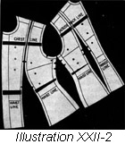
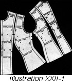
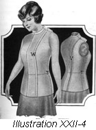
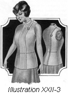
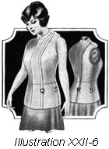
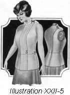
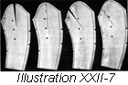

1926—The New-Way Course in Fashionable Clothes-Making
Lesson 22—The Dress Form Lining
The Dress Form Lining
As previously mentioned it will be necessary to make a lining to be used in connection with the dress form. In this lesson you will learn exactly how to make this lining.
Use a pattern for plain lining with the French dart which runs from shoulder to bottom of the lining in the front. This pattern must extend at least ten inches below the waist line. It should be made of a good quality of unbleached muslin of which you will need two and one-half yards, one yard wide. All pieces of the pattern must be cut lengthwise of the material.
Altering the Pattern (Illustrations 22-1 and 2)
To make the dress form lining, it is first necessary to alter the pattern to conform with the individual measurements of the body. Open the pattern, press and identify each piece, marking each one for future identification.
- Place the pattern flat on the table, as shown in the illustration, and measure each line of the body measurement carefully, making note of them.
- Now refer back to your list of body measurements and compare with the pattern measurements you have just taken. The difference between these measurements determines the amount of altering you will have to do. For instance, if the waist line of the pattern measures 26 inches and your body measurement is 28 inches, the pattern will have to be enlarged two inches at the waist line.
- Mark a line on your pattern straight around the bustline. (Line A in illustration) This will come at the fullest part of the curve.
- Mark a line across the chest and one across the back to correspond with the line on which the width of the chest and the width of the back were taken. This line will be 3 1/2 inches below the shoulder seams, measuring in a straight line down from the point of the shoulder as shown in illustration.
- If the measure from the neckline to the bustline (line B in illustration) and the measure from the shoulder line to the bustline on the side front line (line F in illustration) is too short, cut the pattern straight across through the chest line and separate the amount required. Pin a strip of paper back of this to hold the pattern together until other measures are verified.
- Take a measure on the center back from neckline to shoulder blade on bust line (line D in illustration). If it is too short cut straight across through the chest line and insert paper the required width. Pin this paper in also.
- If the pattern is too short from the bustline to the waistline in the center front (line C in illustration) at the side front line and at the underarm, cut the pattern straight across an inch and one-half above the waistline. Insert paper to give the necessary length.
- You may find that the pattern is too short from the shoulderblade or bust line to the waistline in the back. (Line E, in illustration.) In this case, cut the pattern across one and one-half inches above the waistline. Insert paper to add the necessary length. It is often necessary on both back and front to graduate the amount needed; for example, at the center front one inch may be needed, at the underarm (line J in illustration) only one-quarter of an inch needed; when this condition arises, separate the pattern at the front one inch graduating to the side front (line G in illustration), adding the necessary amount there and from that point graduating the amount added to one-quarter of an inch to the underarm seam.
- This may be true also in the back, and the correction here may be made in exactly the same way, first making the alterations on the seam requiring the most added length, and graduating to the seam needing the least. Illustration 22-2.
- Where the person is round-shouldered, it is sometimes necessary to alter the pattern on the "across the back" line. This may be done by cutting across from the side back seam across the back line as shown in the illustration, and separating the pattern the required amount. This alteration may or may not extend through the center back seam.
- If the pattern is too long at any of the points mentioned, the alterations may be made in exactly the same manner, the patterns being folded in, to take out the needed amount, instead of being cut to admit other paper.
- Measure the armcye. If this is found too large, decrease the amount added across the back line, graduating it in the same way as in the alteration above the waist. Do the same on the front if necessary.
- Now measure the shoulder seam, the chest, bust, waist and necklines. Note the difference between these measures and your body measurements. Remember that you are working on the basis of one-half pattern, so you must add or decrease only in proportion to one-half the body measurements—which means that you add to or take away only one-half the amount called for by the alteration. In the illustration we have four seams on which alterations may be made, each seam having two edges. If the side front seam is to be altered to enlarge the bust or chest measure, one-fourth the required amount must be added to each side of this seam. The same is true of the underarm seam and the side back seam.
- Compare the pattern measures and the body measures to learn if the pattern is too large or too small across the chest and bust. Add the required amount to either side of the side front seam, its entire length.
- If the shoulder is too narrow, add the required amount at the shoulder seam, graduating to a point just below the chestline.
- After these alterations, if the waistline is still too small, add the needed amount by starting at the waistline and graduating to the bustline and hipline.
- The waist pattern may be too large instead of too small. Simply fold back the necessary amount on the same lines as the enlargement has been made.
- Any change in the neckline must be made at the shoulder seam by adding or taking from the length or width, graduating the alteration to the point of the shoulder.
- To complete the pattern alterations, remove pins and paste each part in place. Paste in the inserts to add length or breadth, and paste the darts. Have all alterations firm and substantial before proceeding with the cutting of the lining.
Cutting the Lining
You are now ready to cut the waist lining for your dress form. Press your material and fold it through the center. Step-by-step follow these directions and you will have no trouble whatever.
- Lay the material smoothly on the table. Beginning at the left-hand end, place the front section of the front of the pattern with the bottom of the pattern at the left hand end of the material, and the center front toward the selvedge. Be sure the grain of the material runs in the direction indicated by the marks in the pattern. Allow for seams. The other section of the pattern should be laid on the material beside the first section, with plenty of seam allowance provided for. The width of the material will now be used up, so the other parts of the pattern must be placed to the right. Lay the center back portion of the pattern on the correct grain of the goods, the center seam toward the folded edge, and pin in place. Never attempt to cut a pattern without having sufficient pins to hold it exactly in place. The side section of the back should be placed beside the center back portion, with the bottom of the pattern to the left. Pin in place.
- Cut out along the lines of the pattern if seam allowances are made on the pattern. If they are not, add seam allowances in cutting. Mark all construction points and notches shown on the pattern. Note carefully what these construction points are and indicate them on the material before the pattern is removed.
- Now remove the pattern and beginning at the center of the back, pin the waistlines together firmly, pinning first up from waist to neck and then from waist to hip.
- Baste this seam, beginning with a back stitch at the waist line and working up to the neckline. Then baste from the waistline to the hip. This basting should be done with forty cotton, and should be fine even stitching. Be sure that the ends of your cotton are fastened well. It is very important that all waist lines match perfectly at the seams.
- In the same way, baste the side back seam beginning at the waistline and working first up and then down.
- The underarm and side front seams are done in the same manner.
- Now the lining must be fitted before the alterations and the sleeve linings can be made.
To Fit the Lining
Slip the lining on. If you have basted carefully and with number forty cotton, the parts will hold firmly together. Pin the front together along the center lines, matching the waistline perfectly. If the waistline is not matched at each seam, the whole waist will have the appearance of crookedness.
- If the waist lining is too large in the center of the back take up in the center back seam. If too small, let out at this seam.
- If you find that the waist lining is to full over the shoulder blades, take up on the side back seam at point P, Illustration 22-3, and at point V, Illustration 2-4. If the lining is too full in front over the bust, take up on the side front seam, point R, Illustration 22-3, and at point w, Illustration 22-4, if too small, let out on the same seam.
- The lining may be too large under the arm. If it is, it makes a very poor armcye and does not fit snugly against the body. If you find this to be so in the lining you make, take it up in the underarm seam, line T, Illustration 22-5.
- To make the waist either smaller or larger at the waistline the alterations must be evenly divided between the side back, side front and underarm seams.
- Alterations on the hips should be made from the waistline down, and should be divided the same as the alterations for the waist, points Q, S and R, Illustration 22-6.
- The shoulder seam is the last to be fitted. Standing behind the model, lift the lining to a normal position. It should not be tight, but should be smooth and fit without wrinkles. If wrinkles run from the neckline to the armcye move the front portion of the waist toward the shoulder away from the neck. If the lines draw from the point of the shoulder to the center of the front toward the neck, pin at center of shoulder, first working toward the point of the shoulder then from the center to the neck. Fit both shoulders, lines M and K, Illustration 22-4.
- In the figure that is extremely full-busted the armcye is likely to be too loose at the front. The best way to remove this fullness is to take it in a dart from the armcye towards the waistline one and one-half inch in front of the underarm seam. If this dart does not remove the fullness make a dart running from the armcye towards the point of the bust. If round shouldered, the same alteration may have to be made on the back. Take this fullness out with a straight dart if possible. If not, use the diagonal dart.
- If the armcye is too tight after these alterations have been made, slash in at right angles to the edge until a comfortable size has been made.
- Remove the waist and proceed to alter the sleeve pattern.
Altering the Sleeve Illustration 22-7
You will find that your sleeve pattern is in two pieces. The top piece is the large piece on which most of your alterations will be made. The other is the underarm piece. Proceed to alter the sleeve pattern in the following manner, studying each step carefully and being sure that you have followed it out correctly before proceeding to the next step.
- Mark a line across the sleeve pattern, four inches above the elbow and another line four inches below the elbow. Mark a line also at the elbow on both pieces.
- If an alteration has been made on the shoulder of the lining, the same amount must be taken out or added to the upper part of the sleeve. This should be done at the center of the top as shown in illustration. If the alterations requires taking in, fold the necessary amount as shown in illustration 22-7; if it requires letting out, slash the sleeve and add the necessary amount.
- If an alteration has been made at the front of the armcye, a corresponding alteration must be made in the sleeve at the point where the sleeve joins the waist.
- If an alteration has been made at the back of the armcye or under the arm, the back seam of the sleeve must be let out or taken in the corresponding amount.
- Any alteration in the underarm seam or the inside seam of the sleeve, requires taking in or letting out of corresponding amount in the sleeve.
- An alteration in the width of the sleeve from the mark four inches above the elbow should be evenly divided between the back and inside seams of the sleeve.
- If the sleeve is too long or too short above the elbow, let out or take in on the line four inches above the elbow.
- If the sleeve is too long or too short below the elbow, make the necessary alterations on the line four inches below the elbow.
- Pin the pattern on the material; cut your sleeves paying strict attention to the construction marks before the pattern is removed.
Basting the Sleeve
You are now ready to baste your sleeve together and to baste the sleeve into the waist lining. Follow the directions carefully, do not attempt to rush through with it—and you will find that it is really quite simple after all!
- Pin the back seams of the sleeve together matching the notches and arranging the fulness at the elbow. With a back stitch begin at the notch below the elbow and baste down to the wrist. Baste across the fulness at the elbow. Baste from elbow to top of sleeve.
- Now lay the top of the sleeve flat on the table and draw the underarm over so that the seam and notches match on the inside seam. This brings the back seam to the top and fold the upper part of the sleeve about an inch and one-half back of this seam. Make this fold lay flat on the table. This may cause a change in the arrangement of the front seam. With your sleeve still laying flat, shift the seam if necessary enough to keep this fold flat and baste to conform as nearly as possible to the original seam line. Unless your sleeve lays flat on the table in this way it will twist on the arm and be as uncomfortable as it is unsightly.
- Slip the sleeve on with the waist lining and pin the sleeve in the armcye according to the notches. If these notches have been removed in the alterations, pin the sleeve first at the point at the shoulder, balancing it so that it hangs evenly and straight. Beginning at this point pin the sleeve in the armcye as it should be when sewed and make the needed alterations in the front and back seam, taking in or letting out as the sleeve may require.
- Now take both waist and sleeve lining off and with a colored basting thread mark a line on the waistline where the sleeve is pinned in. This line will mark the line where the sleeve is to be basted in later. It will go around the armcye and be on the inside of the waist.
- Baste the alterations in this lining as they are pinned and then remove all pins. Baste the alterations in the sleeve lining exactly as they are pinned and remove these pins also.
- Stitch the seams by machine and finish with a flat fell seam.
- Stitch the sleeve seams and finish by over-sewing.
- Bind the bottom of the waist lining with a bias binding. This must be done by hand as it cannot be done with the binder on the sewing machine.
- Make a plain hem closing at the front and sew on hooks and eyes not more than one inch apart.
- Now slip the lining on once more and fit a high collar as was taught for the model lining, making any necessary alterations as they were made in that lining collar.
- Pin the collar to the neckline and remove the waist. Proceed to baste the collar to the waist and machine stitch, making two lines of stitching at the bottom of the collar.
- To finish, bind the top of the collar and fasten with hooks and eyes.
To use this lining on the dress form, the sleeves must not be basted in but the armcye should be bound with straight tape at the line where the sleeves should be sewed in. This tape represents the seam on the waist at the armcye.